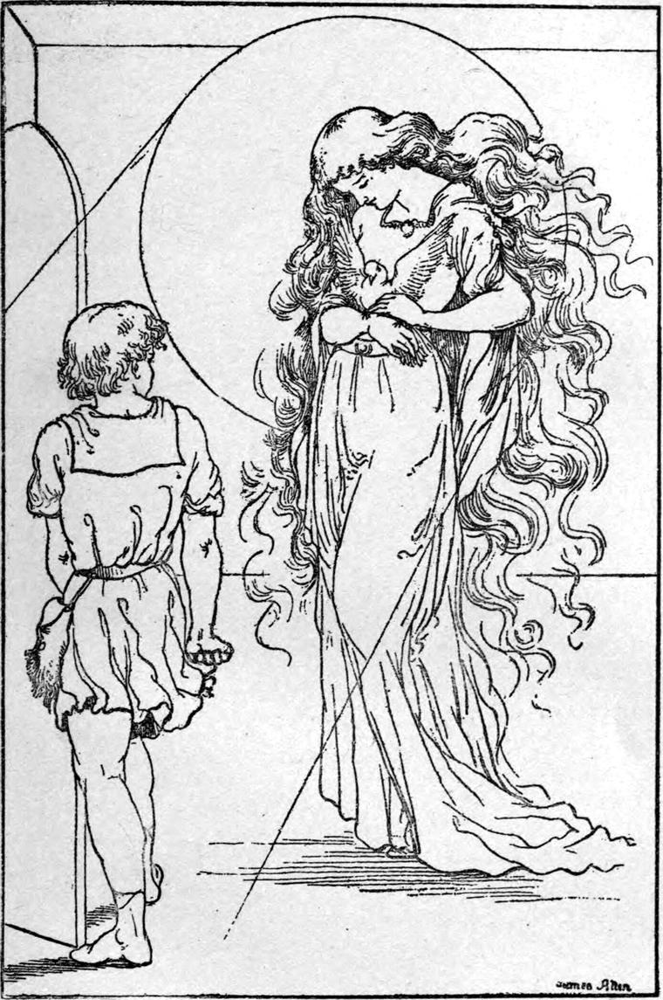

When Curdie reached the castle, and ran into the little garden in front of it, there stood the door wide open. This was as he had hoped, for what could he have said if he had had to knock at it? Those whose business it is to open doors, so often mistake and shut them! But the woman now in charge often puzzled herself greatly to account for the strange fact that however often she shut the door, which, like the rest, she took a great deal of unnecessary trouble to do, she was certain, the next time she went to it, to find it open. I speak now of the great front door, of course: the back door she as persistently kept wide: if people could only go in by that, she said, she would then know what sort they were, and what they wanted. But she would neither have known what sort Curdie was, nor what he wanted, and would assuredly have denied him admittance, for she knew nothing of who was in the tower. So the front door was left open for him, and in he walked.
But where to go next he could not tell. It was not quite dark: a dull, shineless twilight filled the place. All he knew was that he must go up, and that proved enough for the present, for there he saw the great staircase rising before him. When he reached the top of it, he knew there must be more stairs yet, for he could not be near the top of the tower. Indeed by the situation of the stairs, he must be a good way from the tower itself. But those who work well in the depths more easily understand the heights, for indeed in their true nature they are one and the same; miners are in mountains; and Curdie, from knowing the ways of the king's mines, and being able to calculate his whereabouts in them, was now able to find his way about the king's house. He knew its outside perfectly, and now his business was to get his notion of the inside right with the outside.
So he shut his eyes and made a picture of the outside of it in his mind. Then he came in at the door of the picture, and yet kept the picture before him all the time—for you can do that kind of thing in your mind—and took every turn of the stair over again, always watching to remember, every time he turned his face, how the tower lay, and then when he came to himself at the top where he stood, he knew exactly where it was, and walked at once in the right direction.
On his way, however, he came to another stair, and up that he went, of course, watching still at every turn how the tower must lie. At the top of this stair was yet another—they were the stairs up which the princess ran when first, without knowing it, she was on her way to find her great-great-grandmother. At the top of the second stair he could go no farther, and must therefore set out again to find the tower, which, as it rose far above the rest of the house, must have the last of its stairs inside itself.
Having watched every turn to the very last, he still knew quite well in what direction he must go to find it, so he left the stair and went down a passage that led, if not exactly toward it, yet nearer it. This passage was rather dark, for it was very long, with only one window at the end, and although there were doors on both sides of it, they were all shut. At the distant window glimmered the chill east, with a few feeble stars in it, and its like was dreary and old, growing brown, and looking as if it were thinking about the day that was just gone. Presently he turned into another passage, which also had a window at the end of it; and in at that window shone all that was left of the sunset, just a few ashes, with here and there a little touch of warmth: it was nearly as sad as the east, only there was one difference—it was very plainly thinking of tomorrow.
But at present Curdie had nothing to do with today or tomorrow; his business was with the bird, and the tower where dwelt the grand old princess to whom it belonged. So he kept on his way, still eastward, and came to yet another passage, which brought him to a door. He was afraid to open it without first knocking. He knocked, but heard no answer. He was answered nevertheless; for the door gently opened, and there was a narrow stair—and so steep that, big lad as he was, he, too, like the Princess Irene before him, found his hands needful for the climbing. And it was a long climb, but he reached the top at last—a little landing, with a door in front and one on each side. Which should he knock at?
As he hesitated, he heard the noise of a spinning wheel. He knew it at once, because his mother's spinning wheel had been his governess long ago, and still taught him things. It was the spinning wheel that first taught him to make verses, and to sing, and to think whether all was right inside him; or at least it had helped him in all these things. Hence it was no wonder he should know a spinning wheel when he heard it sing—even although as the bird of paradise to other birds was the song of that wheel to the song of his mother's.
He stood listening, so entranced that he forgot to knock, and the wheel went on and on, spinning in his brain songs and tales and rhymes, till he was almost asleep as well as dreaming, for sleep does not always come first. But suddenly came the thought of the poor bird, which had been lying motionless in his hand all the time, and that woke him up, and at once he knocked.
'Come in, Curdie,' said a voice.
Curdie shook. It was getting rather awful. The heart that had never much heeded an army of goblins trembled at the soft word of invitation. But then there was the red-spotted white thing in his hand! He dared not hesitate, though. Gently he opened the door through which the sound came, and what did he see? Nothing at first—except indeed a great sloping shaft of moonlight that came in at a high window, and rested on the floor. He stood and stared at it, forgetting to shut the door.
'Why don't you come in, Curdie?' said the voice. 'Did you never see moonlight before?'
'Never without a moon,' answered Curdie, in a trembling tone, but gathering courage.
'Certainly not,' returned the voice, which was thin and quavering: 'I never saw moonlight without a moon.'
'But there's no moon outside,' said Curdie.
'Ah! but you're inside now,' said the voice.
The answer did not satisfy Curdie; but the voice went on.
'There are more moons than you know of, Curdie. Where there is one sun there are many moons—and of many sorts. Come in and look out of my window, and you will soon satisfy yourself that there is a moon looking in at it.'
The gentleness of the voice made Curdie remember his manners. He shut the door, and drew a step or two nearer to the moonlight.
All the time the sound of the spinning had been going on and on, and Curdie now caught sight of the wheel. Oh, it was such a thin, delicate thing—reminding him of a spider's web in a hedge. It stood in the middle of the moonlight, and it seemed as if the moonlight had nearly melted it away. A step nearer, he saw, with a start, two little hands at work with it. And then at last, in the shadow on the other side of the moonlight which came like silver between, he saw the form to which the hands belonged: a small withered creature, so old that no age would have seemed too great to write under her picture, seated on a stool beyond the spinning wheel, which looked very large beside her, but, as I said, very thin, like a long-legged spider holding up its own web, which was the round wheel itself She sat crumpled together, a filmy thing that it seemed a puff would blow away, more like the body of a fly the big spider had sucked empty and left hanging in his web, than anything else I can think of.
When Curdie saw her, he stood still again, a good deal in wonder, a very little in reverence, a little in doubt, and, I must add, a little in amusement at the odd look of the old marvel. Her grey hair mixed with the moonlight so that he could not tell where the one began and the other ended. Her crooked back bent forward over her chest, her shoulders nearly swallowed up her head between them, and her two little hands were just like the grey claws of a hen, scratching at the thread, which to Curdie was of course invisible across the moonlight. Indeed Curdie laughed within himself, just a little, at the sight; and when he thought of how the princess used to talk about her huge, great, old grandmother, he laughed more. But that moment the little lady leaned forward into the moonlight, and Curdie caught a glimpse of her eyes, and all the laugh went out of him.
'What do you come here for, Curdie?' she said, as gently as before.
Then Curdie remembered that he stood there as a culprit, and worst of all, as one who had his confession yet to make. There was no time to hesitate over it.
'Oh, ma'am! See here,' he said, and advanced a step or two, holding out the pigeon.
'What have you got there?' she asked.
Again Curdie advanced a few steps, and held out his hand with the pigeon, that she might see what it was, into the moonlight. The moment the rays fell upon it the pigeon gave a faint flutter. The old lady put out her old hands and took it, and held it to her bosom, and rocked it, murmuring over it as if it were a sick baby.
When Curdie saw how distressed she was he grew sorrier still, and said:
'I didn't mean to do any harm, ma'am. I didn't think of its being yours.'
'Ah, Curdie! If it weren't mine, what would become of it now?' she returned. 'You say you didn't mean any harm: did you mean any good, Curdie?'
'No,' answered Curdie.
'Remember, then, that whoever does not mean good is always in danger of harm. But I try to give everybody fair play; and those that are in the wrong are in far more need of it always than those who are in the right: they can afford to do without it. Therefore I say for you that when you shot that arrow you did not know what a pigeon is. Now that you do know, you are sorry. It is very dangerous to do things you don't know about.'
'But, please, ma'am—I don't mean to be rude or to contradict you,' said Curdie, 'but if a body was never to do anything but what he knew to be good, he would have to live half his time doing nothing.'
'There you are much mistaken,' said the old quavering voice. 'How little you must have thought! Why, you don't seem even to know the good of the things you are constantly doing. Now don't mistake me. I don't mean you are good for doing them. It is a good thing to eat your breakfast, but you don't fancy it's very good of you to do it. The thing is good, not you.'
Curdie laughed.
'There are a great many more good things than bad things to do. Now tell me what bad thing you have done today besides this sore hurt to my little white friend.'
While she talked Curdie had sunk into a sort of reverie, in which he hardly knew whether it was the old lady or his own heart that spoke. And when she asked him that question, he was at first much inclined to consider himself a very good fellow on the whole. 'I really don't think I did anything else that was very bad all day,' he said to himself. But at the same time he could not honestly feel that he was worth standing up for. All at once a light seemed to break in upon his mind, and he woke up and there was the withered little atomy of the old lady on the other side of the moonlight, and there was the spinning wheel singing on and on in the middle of it!
'I know now, ma'am; I understand now,' he said. 'Thank you, ma'am, for spinning it into me with your wheel. I see now that I have been doing wrong the whole day, and such a many days besides! Indeed, I don't know when I ever did right, and yet it seems as if I had done right some time and had forgotten how. When I killed your bird I did not know I was doing wrong, just because I was always doing wrong, and the wrong had soaked all through me.'
'What wrong were you doing all day, Curdie? It is better to come to the point, you know,' said the old lady, and her voice was gentler even than before.
'I was doing the wrong of never wanting or trying to be better. And now I see that I have been letting things go as they would for a long time. Whatever came into my head I did, and whatever didn't come into my head I didn't do. I never sent anything away, and never looked out for anything to come. I haven't been attending to my mother—or my father either. And now I think of it, I know I have often seen them looking troubled, and I have never asked them what was the matter. And now I see, too, that I did not ask because I suspected it had something to do with me and my behaviour, and didn't want to hear the truth. And I know I have been grumbling at my work, and doing a hundred other things that are wrong.'
'You have got it, Curdie,' said the old lady, in a voice that sounded almost as if she had been crying. 'When people don't care to be better they must be doing everything wrong. I am so glad you shot my bird!'
'Ma'am!' exclaimed Curdie. 'How can you be?'
'Because it has brought you to see what sort you were when you did it, and what sort you will grow to be again, only worse, if you don't mind. Now that you are sorry, my poor bird will be better. Look up, my dovey.'
The pigeon gave a flutter, and spread out one of its red-spotted wings across the old woman's bosom.
'I will mend the little angel,' she said, 'and in a week or two it will be flying again. So you may ease your heart about the pigeon.'
'Oh, thank you! Thank you!' cried Curdie. 'I don't know how to thank you.'
'Then I will tell you. There is only one way I care for. Do better, and grow better, and be better. And never kill anything without a good reason for it.'
'Ma'am, I will go and fetch my bow and arrows, and you shall burn them yourself.'
'I have no fire that would burn your bow and arrows, Curdie.'
'Then I promise you to burn them all under my mother's porridge pot tomorrow morning.'
'No, no, Curdie. Keep them, and practice with them every day, and grow a good shot. There are plenty of bad things that want killing, and a day will come when they will prove useful. But I must see first whether you will do as I tell you.'
'That I will!' said Curdie. 'What is it, ma'am?'
'Only something not to do,' answered the old lady; 'if you should hear anyone speak about me, never to laugh or make fun of me.'
'Oh, ma'am!' exclaimed Curdie, shocked that she should think such a request needful.
'Stop, stop,' she went on. 'People hereabout sometimes tell very odd and in fact ridiculous stories of an old woman who watches what is going on, and occasionally interferes. They mean me, though what they say is often great nonsense. Now what I want of you is not to laugh, or side with them in any way; because they will take that to mean that you don't believe there is any such person a bit more than they do. Now that would not be the case—would it, Curdie?'
'No, indeed, ma'am. I've seen you.'
The old woman smiled very oddly.
'Yes, you've seen me,' she said. 'But mind,' she continued, 'I don't want you to say anything—only to hold your tongue, and not seem to side with them.'
'That will be easy,'said Curdie,'now that I've seen you with my very own eyes, ma'am.'
'Not so easy as you think, perhaps,' said the old lady, with another curious smile. 'I want to be your friend,' she added after a little pause, 'but I don't quite know yet whether you will let me.'
'Indeed I will, ma'am,' said Curdie.
'That is for me to find out,' she rejoined, with yet another strange smile. 'In the meantime all I can say is, come to me again when you find yourself in any trouble, and I will see what I can do for you—only the canning depends on yourself. I am greatly pleased with you for bringing me my pigeon, doing your best to set right what you had set wrong.'
As she spoke she held out her hand to him, and when he took it she made use of his to help herself up from her stool, and—when or how it came about, Curdie could not tell—the same instant she stood before him a tall, strong woman—plainly very old, but as grand as she was old, and only rather severe-looking. Every trace of the decrepitude and witheredness she showed as she hovered like a film about her wheel, had vanished. Her hair was very white, but it hung about her head in great plenty, and shone like silver in the moonlight. Straight as a pillar she stood before the astonished boy, and the wounded bird had now spread out both its wings across her bosom, like some great mystical ornament of frosted silver.

'Oh, now I can never forget you!' cried Curdie. 'I see now what you really are!'
'Did I not tell you the truth when I sat at my wheel?' said the old lady.
'Yes, ma'am,' answered Curdie.
'I can do no more than tell you the truth now,' she rejoined. 'It is a bad thing indeed to forget one who has told us the truth. Now go.'
Curdie obeyed, and took a few steps toward the door. 'Please, ma'am—what am I to call you?' he was going to say; but when he turned to speak, he saw nobody. Whether she was there or not he could not tell, however, for the moonlight had vanished, and the room was utterly dark. A great fear, such as he had never before known, came upon him, and almost overwhelmed him. He groped his way to the door, and crawled down the stair—in doubt and anxiety as to how he should find his way out of the house in the dark. And the stair seemed ever so much longer than when he came up. Nor was that any wonder, for down and down he went, until at length his foot struck a door, and when he rose and opened it, he found himself under the starry, moonless sky at the foot of the tower.
He soon discovered the way out of the garden, with which he had some acquaintance already, and in a few minutes was climbing the mountain with a solemn and cheerful heart. It was rather dark, but he knew the way well. As he passed the rock from which the poor pigeon fell wounded with his arrow, a great joy filled his heart at the thought that he was delivered from the blood of the little bird, and he ran the next hundred yards at full speed up the hill. Some dark shadows passed him: he did not even care to think what they were, but let them run. When he reached home, he found his father and mother waiting supper for him.